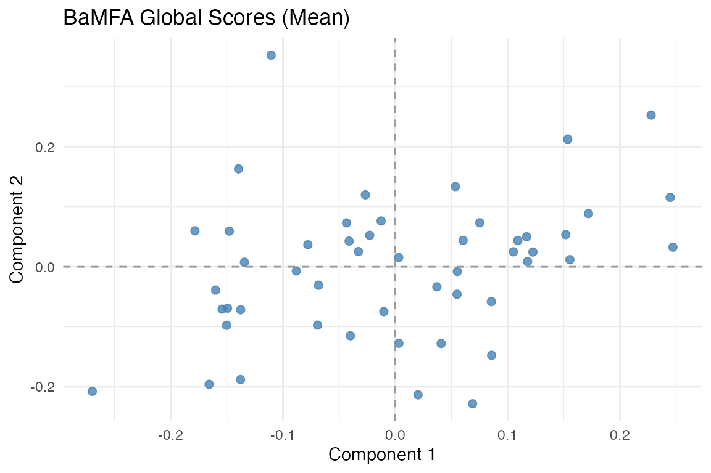
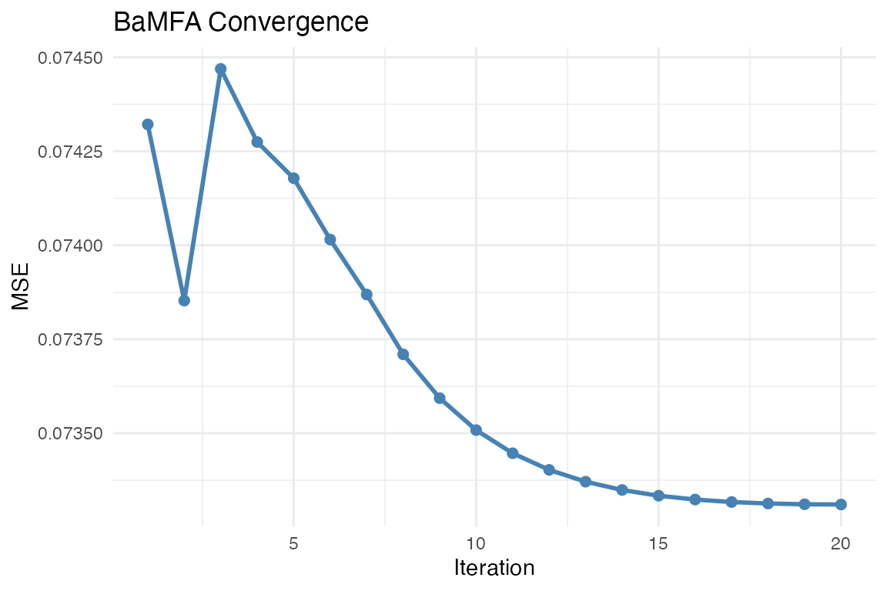
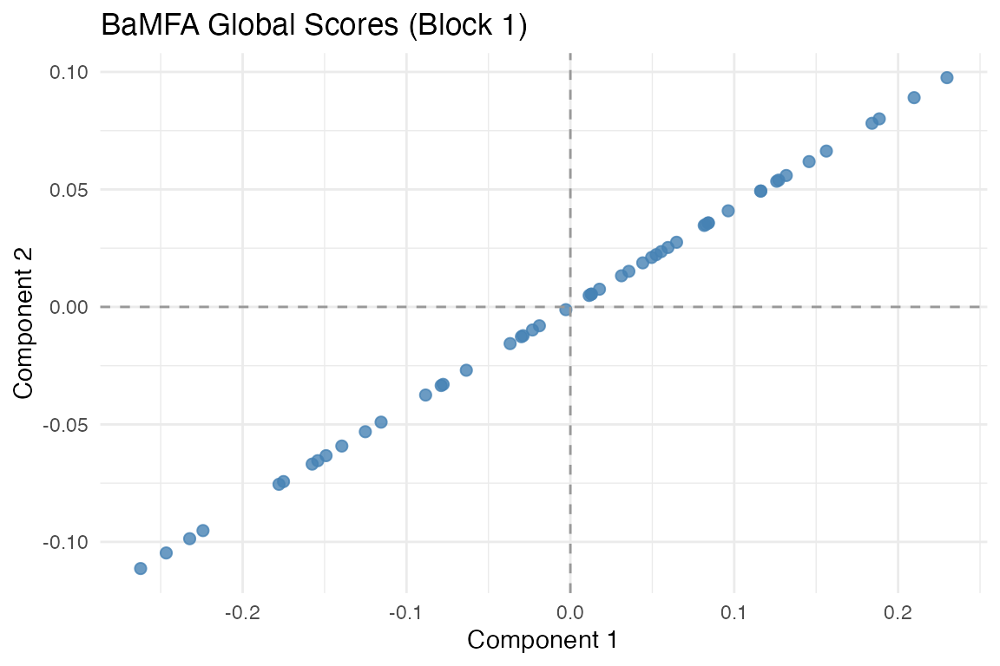
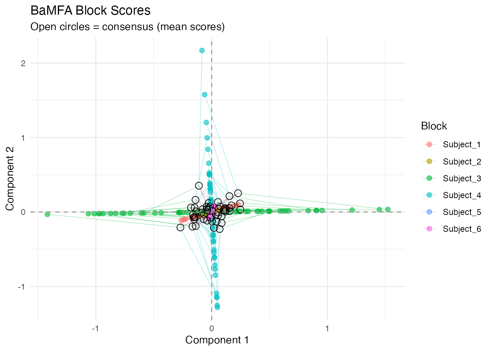

Barycentric MFA (BaMFA)
bamfa.RmdWhy BaMFA?
Multi-subject data often contains two kinds of structure: patterns shared across all subjects (global components) and patterns unique to individuals (local components). Standard MFA captures the global structure but discards subject-specific variation. If you care about individual differences — which subjects deviate, and how — you need a method that explicitly models both.
BaMFA (Barycentric Multiple Factor Analysis) decomposes multi-block data into global and local components simultaneously. Global components capture the consensus structure; local components capture what makes each subject unique.
Quick start
library(muscal)
library(multivarious)
library(ggplot2)We simulate 6 subjects with shared structure (3 global factors) plus subject-specific structure (2 local factors per subject).
length(data_list)
#> [1] 6
sapply(data_list, dim)
#> Subject_1 Subject_2 Subject_3 Subject_4 Subject_5 Subject_6
#> [1,] 50 50 50 50 50 50
#> [2,] 20 20 20 20 20 20Fit BaMFA with 3 global and 2 local components:
fit <- bamfa(data_list, k_g = 3, k_l = 2, niter = 20)
fit
#> Barycentric Multiple Factor Analysis (BaMFA)
#>
#> Model Structure:
#> Global components (k_g): 3
#> Local components (k_l requested): 2
#> Convergence after 20 iterations
#> Local score regularization (lambda_l): 0
#>
#> Block Information:
#> Block 1 ( Subject_1 ):
#> Features: 20
#> Local components retained: 2
#> Block 2 ( Subject_2 ):
#> Features: 20
#> Local components retained: 2
#> Block 3 ( Subject_3 ):
#> Features: 20
#> Local components retained: 2
#> Block 4 ( Subject_4 ):
#> Features: 20
#> Local components retained: 2
#> Block 5 ( Subject_5 ):
#> Features: 20
#> Local components retained: 2
#> Block 6 ( Subject_6 ):
#> Features: 20
#> Local components retained: 2
#>
#> Final reconstruction error (per feature): 0.0733104
Mean global scores across subjects. These capture the consensus structure shared by all blocks.
Global vs. local components
The key idea: BaMFA decomposes each block’s data as:
where:
- are the global scores — similar across subjects
- are the global loadings
- are the local scores — unique to subject
- are the local loadings
The global loadings are encouraged to be similar across subjects, while the local loadings are free to differ.
Convergence
plot_convergence(fit)
BaMFA convergence trace. The alternating least squares algorithm typically converges within 10-20 iterations.
Per-subject score plots
View the global scores for a specific subject:
autoplot(fit, block = 1)
Global scores for Subject 1.
Partial factor scores
Compare how the global structure looks across subjects:
plot_partial_scores(fit, connect = TRUE, show_consensus = TRUE)
Partial factor scores: each subject’s global scores overlaid. Agreement indicates consistent global structure.
Short connecting lines mean subjects agree about the global structure of an observation. Large deviations indicate observations where subjects diverge.
The local penalty (lambda_l)
The lambda_l parameter controls regularization on local
components. By default it is 0 (no regularization). Increasing it
shrinks local components, pushing more structure into the global
subspace:
# Strong local regularization — most structure forced into global
fit_sparse <- bamfa(data_list, k_g = 3, k_l = 2, niter = 20, lambda_l = 1)Choosing k_g and k_l
-
k_g(global components): Set this to the number of shared factors you expect. Start with the number of dominant eigenvalues from pooled PCA. -
k_l(local components): Set this to capture meaningful individual variation. Too many local components can absorb noise.
A useful diagnostic: if partial factor scores are tight (short lines
in the plot), k_g is capturing the shared structure well.
If they’re spread out, you may need more global components.
When to use BaMFA
BaMFA is appropriate when:
- You have multi-subject or multi-condition data blocks
- You want to separate shared (global) from individual (local) structure
- Individual differences are scientifically interesting, not just noise
- You need interpretable per-subject components
BaMFA is not appropriate when:
- You only care about the consensus (use
mfa()— simpler and faster) - Blocks have different observations (use
anchored_mfa()) - Your data are covariance matrices (use
covstatis())
Next steps
-
vignette("mfa")— Standard MFA for consensus-only analysis -
vignette("penalized_mfa")— Penalized MFA for loading similarity -
?bamfa— Full parameter documentation